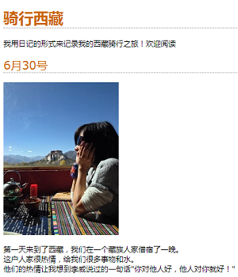
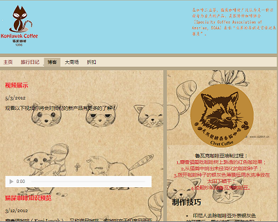
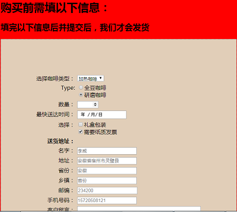

2017-9-18 整理制作博客前的css|HTML练习和笔记
您现在的位置是: 首页> 学无止境> CSS3|HTML5>
先目睹为快把，来看看我用两周时间学完HTML|CSS仿做的学校官网
用了大概两周的时间学习HTML和CSS算是入门了，用所学知识做了我们学校的官网首页。
当然，在学习期间也跟着书上做了很多的小练习，以下列出其中部分：
一个旅行日记的设计与制作

一个休闲店的设计与制作

一个猫屎咖啡的设计与制作，真诚的说一声抱歉视频播放不了，因为视频太占内存，所以为了节省服务器空间，我决定把视频删了！

最后再来一个表单吧，在以后的js学习中经常用的东东的集合

我学习HTML和CSS基本上就是按照：Head First Html与CSS(第二版)这本书进行的，后来又看了妙味课堂的视频做了一些补充。跟着刘伟老师的做了一个网站首页，展示在下面。
当然我做的小练习不止这些，暂时先列出这些吧，接下来我要去整理我的js的学习实例，期待吗？我会努力的
关键字词：小练习，HTML,CSS官网首页
上一篇：css3|HTML5简介
下一篇：。。
留言区